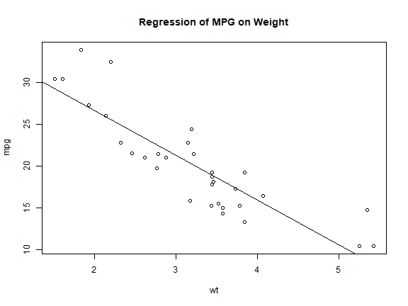

提點和參考
- 基本
- plot()
- lines()
- curves()
- 統計
- boxplot()
- pair()
- hist()
üí° ÊÄéÊ®£Âø´ÈÄüÊü•Ë©¢Ôºü
- ??draw
- ?plot : 參考其中的
plot.default查看圖形選項
函數plot()
可能最常用的繪圖函數就是plot(),而這個函數比較常用的選項有：
- type: 僅分佈點（預設）是否連線等基本模板。
- pch: mark
- cex: 放大倍數
- lty: 線條樣式line style
- lwd: 線條寬度line width
- col:
type
| type | description |
|---|---|
| p | points(*) |
| l | lines |
| o | 點+線 重合 |
| b, c | b(both的意思) 點+線,但是不重合(上面的o是重合) (如果是"c" 則沒有點) |
| s, S | stair steps |
| h | histogram-like vertical lines |
| n | does not produce any points or lines |

pch 資料點 符號
設定樣本點的符號,可以用 pch (point character).
pch 的值除了從 0 到 24 共25個符號外，還有 "*", "+", "o", "@", "#" 可以用。
pch=0 square
pch=1(*) circle
pch=2 triangle point up
pch=3 plus
pch=4 cross
pch=5 diamond
pch=6 triangle point down
pch=7 square cross
pch=8 star
pch=9 diamond plus
pch=10 circle plus
pch=11 triangles up and down
pch=12 square plus
pch=13 circle cross
pch=14 square and triangle down
pch=15 filled square blue
pch=16 filled circle blue
pch=17 filled triangle point up blue
pch=18 filled diamond blue
pch=19 solid circle blue
pch=20 bullet (smaller circle)
pch=21 filled circle red
pch=22 filled square red
pch=23 filled diamond red
pch=24 filled triangle point up red
pch=25 filled triangle point down red
cex 資料點大小
cex 用來放大文字或符號的倍數
因此,
cex = 1(*) is default size
cex = 1.5 is 150% of default size
cex = 0.5 is 50% of default size
[Note : cex.axis --> scales the axis
cex.lab ---> scales the label
cex.main --> scales main title
cex.sub ---> scales the subtitle ]
lty 線條型態
lty = 0 or lty = "blank"
lty = 1(*) or lty = "solid"
lty = 2 or lty = "dashed"
lty = 3 or lty = "dotted"
lty = 4 or lty = "dotdash"
lty = 5 or lty = "longdash"
lty = 6 or lty = "twodash"
顏色 col
col = "blue
col = "red"
col 後的值,可用函數colors() 來查詢顏色,會傳回 657 個代表顏色的參數。或者也可以直接用16進位數字，例如
col = "#A9F3BB" ------> 分別對應 Red=A9, Green=F3, Blue=BB 16進位數字.
colors() #看看有甚麼顏色<!--html_preserve--><div class="expand ms-0 ">
<div class="expand-label" onclick="vexpand(this)">
<i style="font-size:x-small;color:yellow" class="fa fa-chevron-right"></i>
<span >展開</span>
</div><div class="expand-content incode" style="overflow-x:auto"><!--/html_preserve-->#> [1] "white" "aliceblue" "antiquewhite"
#> [4] "antiquewhite1" "antiquewhite2" "antiquewhite3"
#> [7] "antiquewhite4" "aquamarine" "aquamarine1"
#> [10] "aquamarine2" "aquamarine3" "aquamarine4"
#> [13] "azure" "azure1" "azure2"
#> [16] "azure3" "azure4" "beige"
#> [19] "bisque" "bisque1" "bisque2"
#> [22] "bisque3" "bisque4" "black"
#> [25] "blanchedalmond" "blue" "blue1"
#> [28] "blue2" "blue3" "blue4"
#> [31] "blueviolet" "brown" "brown1"
#> [34] "brown2" "brown3" "brown4"
#> [37] "burlywood" "burlywood1" "burlywood2"
#> [40] "burlywood3" "burlywood4" "cadetblue"
#> [43] "cadetblue1" "cadetblue2" "cadetblue3"
#> [46] "cadetblue4" "chartreuse" "chartreuse1"
#> [49] "chartreuse2" "chartreuse3" "chartreuse4"
#> [52] "chocolate" "chocolate1" "chocolate2"
#> [55] "chocolate3" "chocolate4" "coral"
#> [58] "coral1" "coral2" "coral3"
#> [61] "coral4" "cornflowerblue" "cornsilk"
#> [64] "cornsilk1" "cornsilk2" "cornsilk3"
#> [67] "cornsilk4" "cyan" "cyan1"
#> [70] "cyan2" "cyan3" "cyan4"
#> [73] "darkblue" "darkcyan" "darkgoldenrod"
#> [76] "darkgoldenrod1" "darkgoldenrod2" "darkgoldenrod3"
#> [79] "darkgoldenrod4" "darkgray" "darkgreen"
#> [82] "darkgrey" "darkkhaki" "darkmagenta"
#> [85] "darkolivegreen" "darkolivegreen1" "darkolivegreen2"
#> [88] "darkolivegreen3" "darkolivegreen4" "darkorange"
#> [91] "darkorange1" "darkorange2" "darkorange3"
#> [94] "darkorange4" "darkorchid" "darkorchid1"
#> [97] "darkorchid2" "darkorchid3" "darkorchid4"
#> [100] "darkred" "darksalmon" "darkseagreen"
#> [103] "darkseagreen1" "darkseagreen2" "darkseagreen3"
#> [106] "darkseagreen4" "darkslateblue" "darkslategray"
#> [109] "darkslategray1" "darkslategray2" "darkslategray3"
#> [112] "darkslategray4" "darkslategrey" "darkturquoise"
#> [115] "darkviolet" "deeppink" "deeppink1"
#> [118] "deeppink2" "deeppink3" "deeppink4"
#> [121] "deepskyblue" "deepskyblue1" "deepskyblue2"
#> [124] "deepskyblue3" "deepskyblue4" "dimgray"
#> [127] "dimgrey" "dodgerblue" "dodgerblue1"
#> [130] "dodgerblue2" "dodgerblue3" "dodgerblue4"
#> [133] "firebrick" "firebrick1" "firebrick2"
#> [136] "firebrick3" "firebrick4" "floralwhite"
#> [139] "forestgreen" "gainsboro" "ghostwhite"
#> [142] "gold" "gold1" "gold2"
#> [145] "gold3" "gold4" "goldenrod"
#> [148] "goldenrod1" "goldenrod2" "goldenrod3"
#> [151] "goldenrod4" "gray" "gray0"
#> [154] "gray1" "gray2" "gray3"
#> [157] "gray4" "gray5" "gray6"
#> [160] "gray7" "gray8" "gray9"
#> [163] "gray10" "gray11" "gray12"
#> [166] "gray13" "gray14" "gray15"
#> [169] "gray16" "gray17" "gray18"
#> [172] "gray19" "gray20" "gray21"
#> [175] "gray22" "gray23" "gray24"
#> [178] "gray25" "gray26" "gray27"
#> [181] "gray28" "gray29" "gray30"
#> [184] "gray31" "gray32" "gray33"
#> [187] "gray34" "gray35" "gray36"
#> [190] "gray37" "gray38" "gray39"
#> [193] "gray40" "gray41" "gray42"
#> [196] "gray43" "gray44" "gray45"
#> [199] "gray46" "gray47" "gray48"
#> [202] "gray49" "gray50" "gray51"
#> [205] "gray52" "gray53" "gray54"
#> [208] "gray55" "gray56" "gray57"
#> [211] "gray58" "gray59" "gray60"
#> [214] "gray61" "gray62" "gray63"
#> [217] "gray64" "gray65" "gray66"
#> [220] "gray67" "gray68" "gray69"
#> [223] "gray70" "gray71" "gray72"
#> [226] "gray73" "gray74" "gray75"
#> [229] "gray76" "gray77" "gray78"
#> [232] "gray79" "gray80" "gray81"
#> [235] "gray82" "gray83" "gray84"
#> [238] "gray85" "gray86" "gray87"
#> [241] "gray88" "gray89" "gray90"
#> [244] "gray91" "gray92" "gray93"
#> [247] "gray94" "gray95" "gray96"
#> [250] "gray97" "gray98" "gray99"
#> [253] "gray100" "green" "green1"
#> [256] "green2" "green3" "green4"
#> [259] "greenyellow" "grey" "grey0"
#> [262] "grey1" "grey2" "grey3"
#> [265] "grey4" "grey5" "grey6"
#> [268] "grey7" "grey8" "grey9"
#> [271] "grey10" "grey11" "grey12"
#> [274] "grey13" "grey14" "grey15"
#> [277] "grey16" "grey17" "grey18"
#> [280] "grey19" "grey20" "grey21"
#> [283] "grey22" "grey23" "grey24"
#> [286] "grey25" "grey26" "grey27"
#> [289] "grey28" "grey29" "grey30"
#> [292] "grey31" "grey32" "grey33"
#> [295] "grey34" "grey35" "grey36"
#> [298] "grey37" "grey38" "grey39"
#> [301] "grey40" "grey41" "grey42"
#> [304] "grey43" "grey44" "grey45"
#> [307] "grey46" "grey47" "grey48"
#> [310] "grey49" "grey50" "grey51"
#> [313] "grey52" "grey53" "grey54"
#> [316] "grey55" "grey56" "grey57"
#> [319] "grey58" "grey59" "grey60"
#> [322] "grey61" "grey62" "grey63"
#> [325] "grey64" "grey65" "grey66"
#> [328] "grey67" "grey68" "grey69"
#> [331] "grey70" "grey71" "grey72"
#> [334] "grey73" "grey74" "grey75"
#> [337] "grey76" "grey77" "grey78"
#> [340] "grey79" "grey80" "grey81"
#> [343] "grey82" "grey83" "grey84"
#> [346] "grey85" "grey86" "grey87"
#> [349] "grey88" "grey89" "grey90"
#> [352] "grey91" "grey92" "grey93"
#> [355] "grey94" "grey95" "grey96"
#> [358] "grey97" "grey98" "grey99"
#> [361] "grey100" "honeydew" "honeydew1"
#> [364] "honeydew2" "honeydew3" "honeydew4"
#> [367] "hotpink" "hotpink1" "hotpink2"
#> [370] "hotpink3" "hotpink4" "indianred"
#> [373] "indianred1" "indianred2" "indianred3"
#> [376] "indianred4" "ivory" "ivory1"
#> [379] "ivory2" "ivory3" "ivory4"
#> [382] "khaki" "khaki1" "khaki2"
#> [385] "khaki3" "khaki4" "lavender"
#> [388] "lavenderblush" "lavenderblush1" "lavenderblush2"
#> [391] "lavenderblush3" "lavenderblush4" "lawngreen"
#> [394] "lemonchiffon" "lemonchiffon1" "lemonchiffon2"
#> [397] "lemonchiffon3" "lemonchiffon4" "lightblue"
#> [400] "lightblue1" "lightblue2" "lightblue3"
#> [403] "lightblue4" "lightcoral" "lightcyan"
#> [406] "lightcyan1" "lightcyan2" "lightcyan3"
#> [409] "lightcyan4" "lightgoldenrod" "lightgoldenrod1"
#> [412] "lightgoldenrod2" "lightgoldenrod3" "lightgoldenrod4"
#> [415] "lightgoldenrodyellow" "lightgray" "lightgreen"
#> [418] "lightgrey" "lightpink" "lightpink1"
#> [421] "lightpink2" "lightpink3" "lightpink4"
#> [424] "lightsalmon" "lightsalmon1" "lightsalmon2"
#> [427] "lightsalmon3" "lightsalmon4" "lightseagreen"
#> [430] "lightskyblue" "lightskyblue1" "lightskyblue2"
#> [433] "lightskyblue3" "lightskyblue4" "lightslateblue"
#> [436] "lightslategray" "lightslategrey" "lightsteelblue"
#> [439] "lightsteelblue1" "lightsteelblue2" "lightsteelblue3"
#> [442] "lightsteelblue4" "lightyellow" "lightyellow1"
#> [445] "lightyellow2" "lightyellow3" "lightyellow4"
#> [448] "limegreen" "linen" "magenta"
#> [451] "magenta1" "magenta2" "magenta3"
#> [454] "magenta4" "maroon" "maroon1"
#> [457] "maroon2" "maroon3" "maroon4"
#> [460] "mediumaquamarine" "mediumblue" "mediumorchid"
#> [463] "mediumorchid1" "mediumorchid2" "mediumorchid3"
#> [466] "mediumorchid4" "mediumpurple" "mediumpurple1"
#> [469] "mediumpurple2" "mediumpurple3" "mediumpurple4"
#> [472] "mediumseagreen" "mediumslateblue" "mediumspringgreen"
#> [475] "mediumturquoise" "mediumvioletred" "midnightblue"
#> [478] "mintcream" "mistyrose" "mistyrose1"
#> [481] "mistyrose2" "mistyrose3" "mistyrose4"
#> [484] "moccasin" "navajowhite" "navajowhite1"
#> [487] "navajowhite2" "navajowhite3" "navajowhite4"
#> [490] "navy" "navyblue" "oldlace"
#> [493] "olivedrab" "olivedrab1" "olivedrab2"
#> [496] "olivedrab3" "olivedrab4" "orange"
#> [499] "orange1" "orange2" "orange3"
#> [502] "orange4" "orangered" "orangered1"
#> [505] "orangered2" "orangered3" "orangered4"
#> [508] "orchid" "orchid1" "orchid2"
#> [511] "orchid3" "orchid4" "palegoldenrod"
#> [514] "palegreen" "palegreen1" "palegreen2"
#> [517] "palegreen3" "palegreen4" "paleturquoise"
#> [520] "paleturquoise1" "paleturquoise2" "paleturquoise3"
#> [523] "paleturquoise4" "palevioletred" "palevioletred1"
#> [526] "palevioletred2" "palevioletred3" "palevioletred4"
#> [529] "papayawhip" "peachpuff" "peachpuff1"
#> [532] "peachpuff2" "peachpuff3" "peachpuff4"
#> [535] "peru" "pink" "pink1"
#> [538] "pink2" "pink3" "pink4"
#> [541] "plum" "plum1" "plum2"
#> [544] "plum3" "plum4" "powderblue"
#> [547] "purple" "purple1" "purple2"
#> [550] "purple3" "purple4" "red"
#> [553] "red1" "red2" "red3"
#> [556] "red4" "rosybrown" "rosybrown1"
#> [559] "rosybrown2" "rosybrown3" "rosybrown4"
#> [562] "royalblue" "royalblue1" "royalblue2"
#> [565] "royalblue3" "royalblue4" "saddlebrown"
#> [568] "salmon" "salmon1" "salmon2"
#> [571] "salmon3" "salmon4" "sandybrown"
#> [574] "seagreen" "seagreen1" "seagreen2"
#> [577] "seagreen3" "seagreen4" "seashell"
#> [580] "seashell1" "seashell2" "seashell3"
#> [583] "seashell4" "sienna" "sienna1"
#> [586] "sienna2" "sienna3" "sienna4"
#> [589] "skyblue" "skyblue1" "skyblue2"
#> [592] "skyblue3" "skyblue4" "slateblue"
#> [595] "slateblue1" "slateblue2" "slateblue3"
#> [598] "slateblue4" "slategray" "slategray1"
#> [601] "slategray2" "slategray3" "slategray4"
#> [604] "slategrey" "snow" "snow1"
#> [607] "snow2" "snow3" "snow4"
#> [610] "springgreen" "springgreen1" "springgreen2"
#> [613] "springgreen3" "springgreen4" "steelblue"
#> [616] "steelblue1" "steelblue2" "steelblue3"
#> [619] "steelblue4" "tan" "tan1"
#> [622] "tan2" "tan3" "tan4"
#> [625] "thistle" "thistle1" "thistle2"
#> [628] "thistle3" "thistle4" "tomato"
#> [631] "tomato1" "tomato2" "tomato3"
#> [634] "tomato4" "turquoise" "turquoise1"
#> [637] "turquoise2" "turquoise3" "turquoise4"
#> [640] "violet" "violetred" "violetred1"
#> [643] "violetred2" "violetred3" "violetred4"
#> [646] "wheat" "wheat1" "wheat2"
#> [649] "wheat3" "wheat4" "whitesmoke"
#> [652] "yellow" "yellow1" "yellow2"
#> [655] "yellow3" "yellow4" "yellowgreen"<!--html_preserve--></div></div><!--/html_preserve-->
繪製向量中的資料
x <- c(1,3,4,7,8,9)
y <- c(0,3,6,9,7,8)
plot(x,y,main='plot(x,y)')

繪製data.frame 中的資料
attach(mtcars)
plot(mtcars$wt, mtcars$mpg)
plot(mpg~wt,data=mtcars) # üè∑üëèÂíå‰∏äÈù¢ÁöÑÂúñÊ≤퉪ÄÈ∫º‰∏çÂêå

plot()函數，新建視窗然後畫出 weight vs. miles per gallon.abline()不會開啟新視窗做圖，abline()的語法如下:abline(a = NULL, b = NULL, h = NULL, v = NULL, reg = NULL,coef = NULL, untf = FALSE, …)-
代表的意思是畫出一條直線
a+bx，其中a代表截距常數，b則是斜率常數。例如Y=2X+1，則對應的函數為abline(a=1,b=2)。- abline(h=3),水平線
- abline(v=2) 垂直
plot(mpg~wt,data=mtcars) # üè∑üëèÂè™ÊúÉÊúâË≥áÊñôȪû,Âêå‰∏ä # üëè‰∏ãÈù¢3Ë°åÁñäÂú®‰∏äÈù¢ÁöÑÂúñÂΩ¢‰∏ä abline(lm(mtcars$mpg~mtcars$wt)) #üè∑Ë®ªËߣüëè‚ùå abline(mtcars$mpg~mtcars$wt) title("Regression of MPG on Weight") figure
-
❓ 畫出下面的圖,驗證回歸線經過x,y的平均值。
plot(mpg~wt,data=mtcars)
abline(lm(mtcars$mpg~mtcars$wt))
title("Regression of MPG on Weight")
abline(h=mean(mpg),col="red") #<!--html_preserve--><span class="codenote nopre">üè∑<span class="tooltiptext" >üëèË°®Á§∫DV(mpg)Âπ≥ÂùáÁöÑÊ∞¥Âπ≥Á∑ö</span></span><!--/html_preserve-->
abline(v=mean(wt),col="red") #<!--html_preserve--><span class="codenote nopre">üè∑<span class="tooltiptext" >üëèË°®Á§∫IV(wt)Âπ≥ÂùáÁöÑÂûÇÁõ¥Á∑ö</span></span><!--/html_preserve-->

paired
pairs(~wt+mpg+disp+cyl,data = mtcars, main = "Scatterplot Matrix")

plot(mtcars)
函數畫圖
sin
- x: -pi ~ 2*pi
- y: sin(x)
plot(sin, -pi, 2*pi)

line() 範例
require(stats) # for lowess, rpois, rnorm
summary(cars)
#> speed dist
#> Min. : 4.0 Min. : 2.00
#> 1st Qu.:12.0 1st Qu.: 26.00
#> Median :15.0 Median : 36.00
#> Mean :15.4 Mean : 42.98
#> 3rd Qu.:19.0 3rd Qu.: 56.00
#> Max. :25.0 Max. :120.00
#plot(cars) # 因為只有兩個欄位,直接丟進去,不分別放x,y
plot(cars$dist~cars$speed)
abline(lm(cars$dist~cars$speed),col="red") #沒有data這個參數,所以要加上cars
lines(lowess(cars),col="blue") #üè∑Áñä‰∏äÈ°ç§ñÁöÑÁ∑öÊ¢ù
- ‚ùåabline(cars$dist ~ cars$speed) üëè˶ÅÊúâlm,Âõ†ÁÇ∫˶ÅÊâæa,b
- ‚ùåabline(lowness(cars)) üëè‰πüÊòØÊ≤íÊúâa,b :Âõ†ÁÇ∫lownessÊòØÈùûÂèÉÊï∏‰º∞Ë®à,ÂÇ≥Âõû‰æÜÁöÑÊòØÊ®£Êú¨Èªû
- LOWESS, locally weighted scatter plot smoothing。
- 相關閱讀
lowess範例
attach(cars) plot(speed,dist,main="Stopping Distance", xlab="Speed", ylab="Distance", pch=21, bg=2, col=2) lines(lowess(cars, f=.3),col =1) lines(lowess(cars, f=.5),col =4) lines(lowess(cars, f=.1),col =7)
Histograms
函數hist(x)：其中x是一個數字向量，
- 選項
freq=FALSE用來畫出 probability densities 而不是次數 frequencies. - 選項：
breaks= ##則是控制分成幾份。
-
Simple Histogram
hist(mtcars$mpg)
figure -
分成12份，顏色紅色。
hist(mtcars$mpg, breaks=12, col="red")
figure -
自行給定分割點
hist(mtcars$mpg, breaks=c(4,5,12,50), col="red")
figure
Add a Normal Curve
Histograms can be a poor method for determining the shape of a distribution because it is so strongly affected by the number of bins used.
x <- mtcars$mpg
h<-hist(x, breaks=10, col="red", xlab="Miles Per Gallon", main="Histogram with Normal Curve")
xfit<-seq(min(x),max(x),length=40)
yfit<-dnorm(xfit,mean=mean(x),sd=sd(x))
yfit <- yfit*diff(h$mids[1:2])*length(x) #üè∑length(X)ÊòØÂÄãÊï∏,‰∏çÊòØÈï∑Â∫¶
lines(xfit, yfit, col="blue", lwd=2)
$$ pdf = \frac{機率}{長度} =\frac{\frac{n}{N}}{bin \quad width} $$
所以
$$ n=pdf\times N \times (bin \quad width) $$
h
#> $breaks
#> [1] 10 12 14 16 18 20 22 24 26 28 30 32 34
#>
#> $counts
#> [1] 2 1 7 3 5 5 2 2 1 0 2 2
#>
#> $density
#> [1] 0.031250 0.015625 0.109375 0.046875 0.078125 0.078125 0.031250 0.031250
#> [9] 0.015625 0.000000 0.031250 0.031250
#>
#> $mids
#> [1] 11 13 15 17 19 21 23 25 27 29 31 33
#>
#> $xname
#> [1] "x"
#>
#> $equidist
#> [1] TRUE
#>
#> attr(,"class")
#> [1] "histogram"
Kernel Density Plot
核密度畫圖(Kernal density plots) 用來觀察一個變量，比較有有效率，指令如：plot(density(x)) 其中x 是一個數字向量。
d <- density(mtcars$mpg) # returns the density data
plot(d) # plots the results

Filled Density Plot
d <- density(mtcars$mpg)
plot(d, main="Kernel Density of Miles Per Gallon")
polygon(d, col="red", border="blue")
其他
plot(mpg): plot(~mpg) plot(mpg ~ cyl ): plot(cyl,mpg) plot(mpg ~ cyl | gear)
data<-mtcars
attach(data)
names(data)
#> [1] "mpg" "cyl" "disp" "hp" "drat" "wt" "qsec" "vs" "am" "gear"
#> [11] "carb"
#gear<-factor(gear)
#am<-factor(am)
plot(mpg ~ cyl | gear)